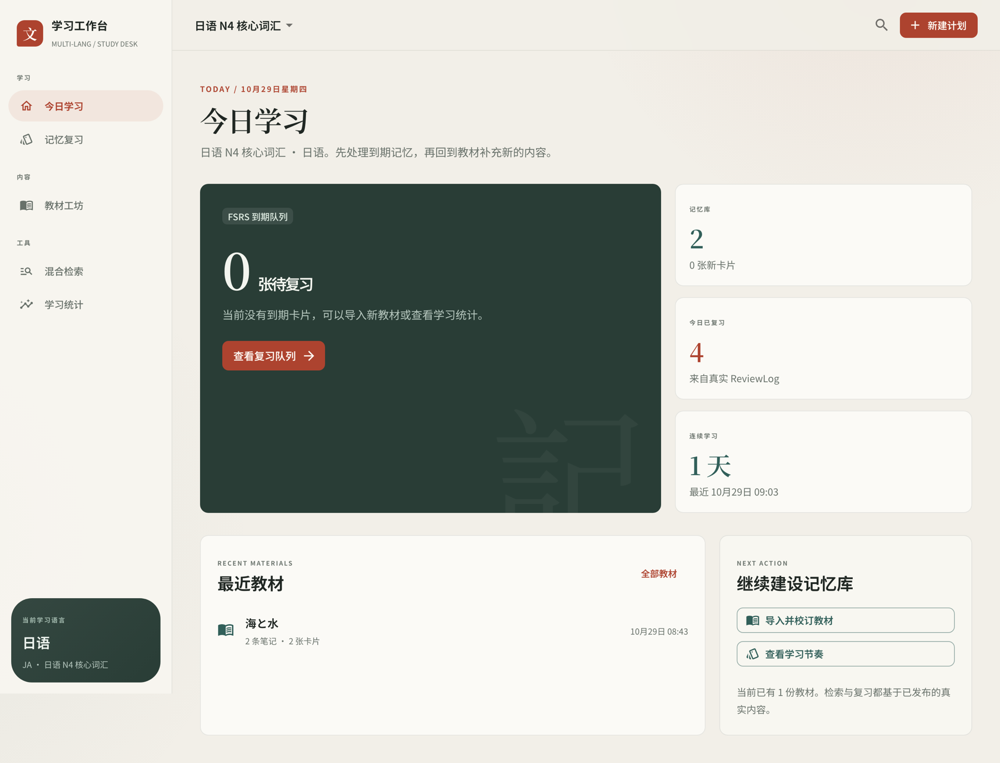

教材进不来
PDF、网页、课程笔记格式各异，清洗和整理占掉了真正学习的时间。
OceanBase 2026 · Qoder 赛道 / 参赛作品
面向英语与日语的自托管学习工作台。导入教材、人工校订、在同一事务里写入 seekdb 检索文档，再用 FSRS 安排下一次复习。进度全部来自真实 ReviewLog，没有演示曲线。

01 / 问题
教材、笔记、检索和复习常常分散在四个工具里。每多一次复制粘贴，记忆就多断一次。
PDF、网页、课程笔记格式各异，清洗和整理占掉了真正学习的时间。
没有调度，记过的内容不会在恰当的时间回来；想复习时也不知道该复习什么。
搜索给出一段答案，却说不清来自哪本教材、哪一次修订。
这个项目把教材段落、笔记、检索文档和复习状态放进同一个 seekdb，用一次发布事务串起来。
02 / 闭环
六个步骤都在同一个工作台里完成，中间没有导出、导入和手工同步。
粘贴 Markdown，解析成安全 AST 与可校订的草稿。
检查段落、笔记字段与 warning，确认后才进入发布。
教材、笔记、卡片与 SearchDocument 在同一事务写入。
按日语 ngram、英语 space 配置查原文、读音与释义。
FSRS 按真实评分计算 stability、difficulty 与 dueAt。
保持率、连续天数与 14 天节奏直接从数据库聚合。
没有确认发布，就不会生成卡片或检索文档。没有复习记录，统计页就保持空白。
03 / 能力
不是功能清单的堆叠，而是让每一步都能被验证。
Markdown 解析为安全 AST；草稿预览展示段落、笔记与 warning。发布是显式动作，预览不会冒充结果。
业务文本与 SearchDocument 同事务发布；MATCH ... AGAINST
参数化查询。日语走 ngram，英语走 space，由语言插件配置决定。
ts-fsrs 4.7 计算调度；评分写入只追加的 review_logs。到期队列只包含真正到期的卡片，未来任务不提前计入。
累计复习、今日复习、保持率、连续天数与 14 天节奏全部来自 cards、card_scheduling_states 与 review_logs。
英语与日语各自注册 NoteType、规范化函数和检索配置。核心路由没有按语言写死分支，新增语言不改通用流程。
AppShell 独占布局，插件只向 route、sidebar、headerAction 三类贡献点注册。五个通用页面也由内置插件装配。
04 / 界面
以下截图来自本地运行的日语工作台，连接真实 seekdb。点击任意截图可放大查看。
05 / 技术结合
首版只使用 seekdb 一个数据库。业务表、全文检索文档和复习状态共享同一套事务与时间基准。
教材段落、笔记、卡片与 SearchDocument 一起提交；任何一步失败全部回滚，不会出现“文本写入了但检索不到”的半成品。
日语 normalized_text 走 ngram，英语
original_text 走 space。列选择来自
searchConfig，不在 SQL 里按语言代码写分支。
连接池统一使用 UTC，到期判断改用
UTC_TIMESTAMP(3)，修复了数据库 +08:00 与 Node
进程时区漂移导致的口径差。
不引入 PostgreSQL 或独立 MySQL。11 张表承载计划、教材、笔记、卡片、调度状态与只追加的 ReviewLog。
06 / 运行
需要 Node.js 22+、pnpm 10 与 Docker（或 OrbStack）。seekdb 以容器方式启动。
首次拉取镜像与健康检查可能需要几分钟。
复制环境变量模板，按本地密码修改占位值。
API 监听 8787，Web 监听 5173；Vite 将 /v1 代理到 API。
数据库连接、迁移与真实 seekdb 验证细节见仓库中的
docs/sprint1/mvp-plan.md。
# 1. 启动 seekdb
docker compose -f infra/seekdb/docker-compose.yml up -d
# 2. 安装依赖并迁移
cp .env.example .env
pnpm install
pnpm migrate
# 3. 两个终端分别启动
pnpm dev:api # http://localhost:8787
pnpm dev:web # http://localhost:5173# 海と水
海についての短い教材です。
| 海 | うみ、大海 |按步骤验收
http://localhost:5173，新建「日语 N4 核心词汇」。语言选项来自 GET /v1/languages。07 / 开发记录
从需求拆解、设计、编码到真实环境联调与修复，开发过程集中在 Qoder 中完成。
明确单库、模块依赖、插件契约与验收范围，形成设计文档后开始实施。
契约、领域、存储、API、Web 与四个默认插件分属独立包，依赖方向固定。
创建计划 → 导入 → 发布 → 检索 → FSRS 复习 → 统计，全部在真实数据库上跑通。
修复时区漂移导致的统计/到期队列口径差；修复教材发布后草稿状态被误清空。均在浏览器与数据库上复验。
抽出 WebPluginRegistry 与语言插件 server 入口；内置页面也通过受控贡献点注册。
本页通过 Qoder Sites 发布，作为赛题作品网站与评审入口。